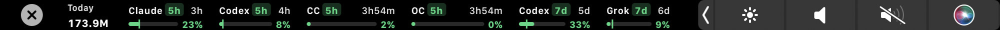
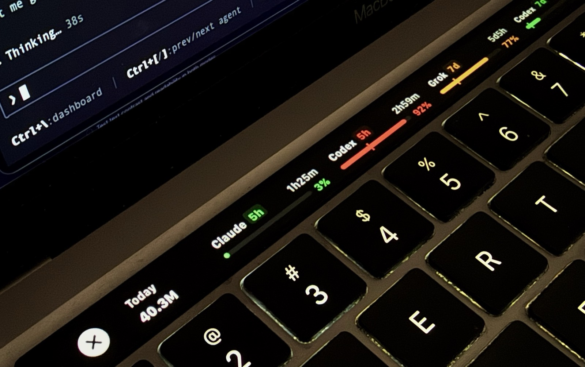

Touch Bar companion for TokenTracker.
Claude, Codex, Cursor, Grok, OpenCode, and Command Code, counting down on the Touch Bar. You see what’s left before the limit hits.
Free open-source utility


Green, then amber, then red. You feel it before you hit the wall.
A Mac with a Touch Bar. macOS 13 or later. TokenTracker running.
git clone https://github.com/jashjacob/TokenBar.git
cd TokenBar
./scripts/install.shChips will be shown for Claude, Codex, Cursor, Grok, Kimi, OpenCode, Command Code, and Grok Bot.
Command Code, OpenCode, Grok, Cursor, Kimi, Codex, and Antigravity can still show, from the login already on your Mac. Claude still needs TokenTracker to send a window.
From the TokenBar folder:
git pull
./scripts/install.shQuit TokenBar. If Launch at Login is on, turn it off in the menu first. Then drag TokenBar out of Applications.
TokenTracker sometimes comes back stale or empty. A fallback then asks that tool itself, and owns every window for it.
| Tool | Fallback |
|---|---|
| Command Code | In |
| OpenCode | In |
| Grok | In |
| Cursor | In |
| Kimi | In |
| Claude | Not yet |
| ChatGPT / Codex | In |
| Antigravity | In |
Don’t download the disk image. Don’t clone TokenTracker unless asked.
1. Touch Bar Mac, macOS 13 or later.
2. TokenTracker must return 200 from http://127.0.0.1:7680/functions/tokentracker-usage-limits before you install TokenBar.
3. ./scripts/install.sh
4. Check pgrep -x TokenBar and ~/Library/Logs/TokenBar.log.